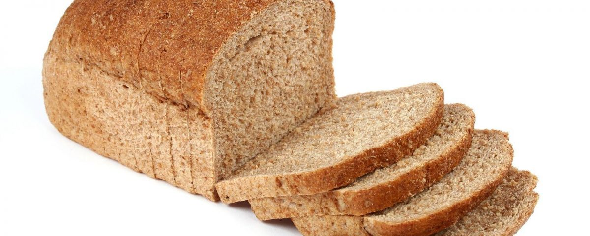

Pão Caseiro

Pão caseiro com farinha de trigo integral
Ingredientes
- - 2 xícara de farinha de trigo
- - 1/2 xícara(chá) de aveia
- - 1 ovo
- - 1 colher(chá) de sal
- - 1 colher(sobremesa) de açucar fit
- - 1/4 xícara (chá) de óleo de canola (50 ml)
- - 1 xícara (chá) de leite morno (200 ml)
- - 1 envelope de fermento biológico seco (10 g)
Modeo de preparo
- Bata no liquidificador o leite, o ovo, o sal, o açúcar, o óleo e o fermento.
- Despejar numa vasilha e acrescentar a farinha e a aveia, mexer bem.
- Colocar em forma de pão untada e enfarinhada , deixar descansar até dobrar o volume.
- Asse em forno preaquecido a 180ºC até dourar.